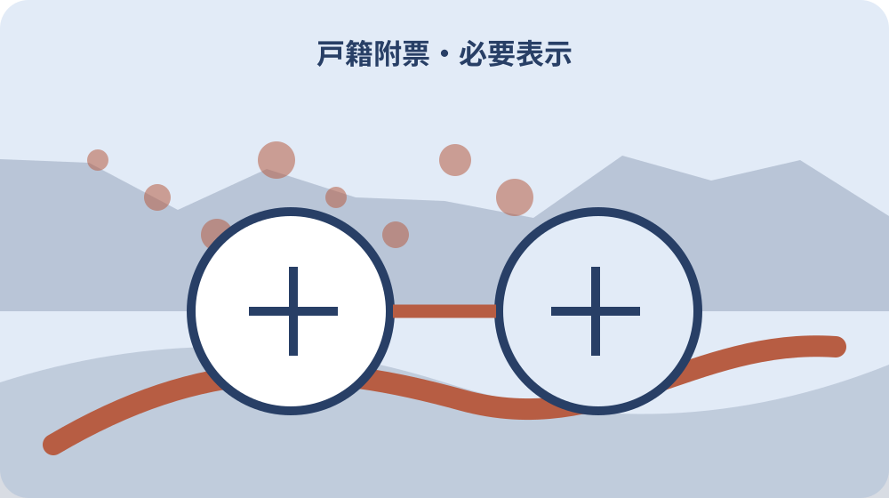

先に結論を確認する
この記事の答え：提出先が必要とする住所を聞くため、対象者、基準日、公式資料、未確認事項を最初の一行へ置きます。
森町で最初に照合する条件：森町公式の内容が異なる二つの案内を2026-08-13に確認する
提出先が必要とする住所を聞く
「提出先が必要とする住所を聞く」の1段落では、提出先が必要とする住所を聞くでは、戸籍の附票は戸籍に在籍する人の住所履歴を記録した証明です。「提出先が必要とする住所を聞く」の1段落では、まず今回の対象者、基準日、手元資料を窓口メモの同じ行に置きます。「提出先が必要とする住所を聞く」の1段落では、森町で戸籍の附票を住所履歴・本籍・必要表示で請求するは制度名だけを写す記事ではなく、今回の一件がどの条件に当たるかを家族と窓口が追える形にするための手順です。
「提出先が必要とする住所を聞く」の2段落では、提出先が必要とする住所を聞くを進めるときは、公式案内の記載と家族が把握している事情を左右に分けます。「提出先が必要とする住所を聞く」の2段落では、根拠として確認できるのは「戸籍の附票は戸籍に在籍する人の住所履歴を記録した証明です」までです。「提出先が必要とする住所を聞く」の2段落では、資料にない個別判断は未確認欄へ残し、都合のよい結論で埋めません。
「提出先が必要とする住所を聞く」の3段落では、提出先が必要とする住所を聞くに使う書類には、発行元、発行日、対象者、番号の種類を付記します。「提出先が必要とする住所を聞く」の3段落では、次の「対象者の本籍と筆頭者を確認する」へ渡す項目だけを選び、原本、写し、画面保存を同じ証拠として扱わないことが、後日のやり直しを減らします。
「提出先が必要とする住所を聞く」の4段落では、提出先が必要とする住所を聞くの窓口質問は、現在の状態、確認した公式資料、知りたい一点の順に短くします。「提出先が必要とする住所を聞く」の4段落では、回答を受けたら担当部署、回答日、再確認が必要な条件を追記し、口頭回答だけで完了印を付けないようにします。
「提出先が必要とする住所を聞く」の5段落では、提出先が必要とする住所を聞くを家族へ引き継ぐ時点では、確認済み、対象外、未確認の三欄をそろえます。「提出先が必要とする住所を聞く」の5段落では、1番目の工程として「戸籍の附票は戸籍に在籍する人の住所履歴を記録した証明です」と今回の対象を結び、次に読む人が公的事実と私的な希望を取り違えない状態で保存してください。
対象者の本籍と筆頭者を確認する
「対象者の本籍と筆頭者を確認する」の1段落では、対象者の本籍と筆頭者を確認するでは、住民票の写しと戸籍の附票は証明する範囲が異なります。「対象者の本籍と筆頭者を確認する」の1段落では、まず今回の対象者、基準日、手元資料を期限台帳の同じ行に置きます。「対象者の本籍と筆頭者を確認する」の1段落では、森町で戸籍の附票を住所履歴・本籍・必要表示で請求するは制度名だけを写す記事ではなく、今回の一件がどの条件に当たるかを家族と窓口が追える形にするための手順です。
「対象者の本籍と筆頭者を確認する」の2段落では、対象者の本籍と筆頭者を確認するを進めるときは、公式案内の記載と家族が把握している事情を左右に分けます。「対象者の本籍と筆頭者を確認する」の2段落では、根拠として確認できるのは「住民票の写しと戸籍の附票は証明する範囲が異なります」までです。「対象者の本籍と筆頭者を確認する」の2段落では、資料にない個別判断は未確認欄へ残し、都合のよい結論で埋めません。
「対象者の本籍と筆頭者を確認する」の3段落では、対象者の本籍と筆頭者を確認するに使う書類には、発行元、発行日、対象者、番号の種類を付記します。「対象者の本籍と筆頭者を確認する」の3段落では、次の「戸籍の附票と住民票を分ける」へ渡す項目だけを選び、原本、写し、画面保存を同じ証拠として扱わないことが、後日のやり直しを減らします。
戸籍の附票と住民票を分ける
「戸籍の附票と住民票を分ける」の1段落では、戸籍の附票と住民票を分けるでは、附票請求では本籍と戸籍筆頭者の情報が手掛かりになります。「戸籍の附票と住民票を分ける」の1段落では、まず今回の対象者、基準日、手元資料を資料束の同じ行に置きます。「戸籍の附票と住民票を分ける」の1段落では、森町で戸籍の附票を住所履歴・本籍・必要表示で請求するは制度名だけを写す記事ではなく、今回の一件がどの条件に当たるかを家族と窓口が追える形にするための手順です。
「戸籍の附票と住民票を分ける」の2段落では、戸籍の附票と住民票を分けるを進めるときは、公式案内の記載と家族が把握している事情を左右に分けます。「戸籍の附票と住民票を分ける」の2段落では、根拠として確認できるのは「附票請求では本籍と戸籍筆頭者の情報が手掛かりになります」までです。「戸籍の附票と住民票を分ける」の2段落では、資料にない個別判断は未確認欄へ残し、都合のよい結論で埋めません。
「戸籍の附票と住民票を分ける」の3段落では、戸籍の附票と住民票を分けるに使う書類には、発行元、発行日、対象者、番号の種類を付記します。「戸籍の附票と住民票を分ける」の3段落では、次の「必要な住所履歴の期間を区切る」へ渡す項目だけを選び、原本、写し、画面保存を同じ証拠として扱わないことが、後日のやり直しを減らします。

必要な住所履歴の期間を区切る
「必要な住所履歴の期間を区切る」の1段落では、必要な住所履歴の期間を区切るでは、必要な過去住所が現在の附票だけで確認できない場合があります。「必要な住所履歴の期間を区切る」の1段落では、まず今回の対象者、基準日、手元資料を判断表の同じ行に置きます。「必要な住所履歴の期間を区切る」の1段落では、森町で戸籍の附票を住所履歴・本籍・必要表示で請求するは制度名だけを写す記事ではなく、今回の一件がどの条件に当たるかを家族と窓口が追える形にするための手順です。
「必要な住所履歴の期間を区切る」の2段落では、必要な住所履歴の期間を区切るを進めるときは、公式案内の記載と家族が把握している事情を左右に分けます。「必要な住所履歴の期間を区切る」の2段落では、根拠として確認できるのは「必要な過去住所が現在の附票だけで確認できない場合があります」までです。「必要な住所履歴の期間を区切る」の2段落では、資料にない個別判断は未確認欄へ残し、都合のよい結論で埋めません。
「必要な住所履歴の期間を区切る」の3段落では、必要な住所履歴の期間を区切るに使う書類には、発行元、発行日、対象者、番号の種類を付記します。「必要な住所履歴の期間を区切る」の3段落では、次の「本籍・筆頭者表示の要否を選ぶ」へ渡す項目だけを選び、原本、写し、画面保存を同じ証拠として扱わないことが、後日のやり直しを減らします。
本籍・筆頭者表示の要否を選ぶ
「本籍・筆頭者表示の要否を選ぶ」の1段落では、本籍・筆頭者表示の要否を選ぶでは、本籍や筆頭者の表示は利用目的に応じて要否を確認します。「本籍・筆頭者表示の要否を選ぶ」の1段落では、まず今回の対象者、基準日、手元資料を照合票の同じ行に置きます。「本籍・筆頭者表示の要否を選ぶ」の1段落では、森町で戸籍の附票を住所履歴・本籍・必要表示で請求するは制度名だけを写す記事ではなく、今回の一件がどの条件に当たるかを家族と窓口が追える形にするための手順です。
「本籍・筆頭者表示の要否を選ぶ」の2段落では、本籍・筆頭者表示の要否を選ぶを進めるときは、公式案内の記載と家族が把握している事情を左右に分けます。「本籍・筆頭者表示の要否を選ぶ」の2段落では、根拠として確認できるのは「本籍や筆頭者の表示は利用目的に応じて要否を確認します」までです。「本籍・筆頭者表示の要否を選ぶ」の2段落では、資料にない個別判断は未確認欄へ残し、都合のよい結論で埋めません。
「本籍・筆頭者表示の要否を選ぶ」の3段落では、本籍・筆頭者表示の要否を選ぶに使う書類には、発行元、発行日、対象者、番号の種類を付記します。「本籍・筆頭者表示の要否を選ぶ」の3段落では、次の「在外選挙人情報の要否を確認する」へ渡す項目だけを選び、原本、写し、画面保存を同じ証拠として扱わないことが、後日のやり直しを減らします。
在外選挙人情報の要否を確認する
「在外選挙人情報の要否を確認する」の1段落では、在外選挙人情報の要否を確認するでは、請求できる人の範囲と代理請求の資料を事前に確かめます。「在外選挙人情報の要否を確認する」の1段落では、まず今回の対象者、基準日、手元資料を家族記録の同じ行に置きます。「在外選挙人情報の要否を確認する」の1段落では、森町で戸籍の附票を住所履歴・本籍・必要表示で請求するは制度名だけを写す記事ではなく、今回の一件がどの条件に当たるかを家族と窓口が追える形にするための手順です。
「在外選挙人情報の要否を確認する」の2段落では、在外選挙人情報の要否を確認するを進めるときは、公式案内の記載と家族が把握している事情を左右に分けます。「在外選挙人情報の要否を確認する」の2段落では、根拠として確認できるのは「請求できる人の範囲と代理請求の資料を事前に確かめます」までです。「在外選挙人情報の要否を確認する」の2段落では、資料にない個別判断は未確認欄へ残し、都合のよい結論で埋めません。
「在外選挙人情報の要否を確認する」の3段落では、在外選挙人情報の要否を確認するに使う書類には、発行元、発行日、対象者、番号の種類を付記します。「在外選挙人情報の要否を確認する」の3段落では、次の「現在戸籍と除籍の附票を分ける」へ渡す項目だけを選び、原本、写し、画面保存を同じ証拠として扱わないことが、後日のやり直しを減らします。
現在戸籍と除籍の附票を分ける
「現在戸籍と除籍の附票を分ける」の1段落では、現在戸籍と除籍の附票を分けるでは、森町は戸籍証明の請求を住民生活課住民係で案内しています。「現在戸籍と除籍の附票を分ける」の1段落では、まず今回の対象者、基準日、手元資料を受付記録の同じ行に置きます。「現在戸籍と除籍の附票を分ける」の1段落では、森町で戸籍の附票を住所履歴・本籍・必要表示で請求するは制度名だけを写す記事ではなく、今回の一件がどの条件に当たるかを家族と窓口が追える形にするための手順です。
「現在戸籍と除籍の附票を分ける」の2段落では、現在戸籍と除籍の附票を分けるを進めるときは、公式案内の記載と家族が把握している事情を左右に分けます。「現在戸籍と除籍の附票を分ける」の2段落では、根拠として確認できるのは「森町は戸籍証明の請求を住民生活課住民係で案内しています」までです。「現在戸籍と除籍の附票を分ける」の2段落では、資料にない個別判断は未確認欄へ残し、都合のよい結論で埋めません。
「現在戸籍と除籍の附票を分ける」の3段落では、現在戸籍と除籍の附票を分けるに使う書類には、発行元、発行日、対象者、番号の種類を付記します。「現在戸籍と除籍の附票を分ける」の3段落では、次の「請求者との関係を資料で示す」へ渡す項目だけを選び、原本、写し、画面保存を同じ証拠として扱わないことが、後日のやり直しを減らします。
請求者との関係を資料で示す
「請求者との関係を資料で示す」の1段落では、請求者との関係を資料で示すでは、森町の戸籍謄抄本等申請ページには請求時の確認事項があります。「請求者との関係を資料で示す」の1段落では、まず今回の対象者、基準日、手元資料を確認票の同じ行に置きます。「請求者との関係を資料で示す」の1段落では、森町で戸籍の附票を住所履歴・本籍・必要表示で請求するは制度名だけを写す記事ではなく、今回の一件がどの条件に当たるかを家族と窓口が追える形にするための手順です。
「請求者との関係を資料で示す」の2段落では、請求者との関係を資料で示すを進めるときは、公式案内の記載と家族が把握している事情を左右に分けます。「請求者との関係を資料で示す」の2段落では、根拠として確認できるのは「森町の戸籍謄抄本等申請ページには請求時の確認事項があります」までです。「請求者との関係を資料で示す」の2段落では、資料にない個別判断は未確認欄へ残し、都合のよい結論で埋めません。
「請求者との関係を資料で示す」の3段落では、請求者との関係を資料で示すに使う書類には、発行元、発行日、対象者、番号の種類を付記します。「請求者との関係を資料で示す」の3段落では、次の「代理請求の委任状を準備する」へ渡す項目だけを選び、原本、写し、画面保存を同じ証拠として扱わないことが、後日のやり直しを減らします。
代理請求の委任状を準備する
「代理請求の委任状を準備する」の1段落では、代理請求の委任状を準備するでは、郵便請求では往復と処理の時間を見込みます。「代理請求の委任状を準備する」の1段落では、まず今回の対象者、基準日、手元資料を一件カードの同じ行に置きます。「代理請求の委任状を準備する」の1段落では、森町で戸籍の附票を住所履歴・本籍・必要表示で請求するは制度名だけを写す記事ではなく、今回の一件がどの条件に当たるかを家族と窓口が追える形にするための手順です。
「代理請求の委任状を準備する」の2段落では、代理請求の委任状を準備するを進めるときは、公式案内の記載と家族が把握している事情を左右に分けます。「代理請求の委任状を準備する」の2段落では、根拠として確認できるのは「郵便請求では往復と処理の時間を見込みます」までです。「代理請求の委任状を準備する」の2段落では、資料にない個別判断は未確認欄へ残し、都合のよい結論で埋めません。
「代理請求の委任状を準備する」の3段落では、代理請求の委任状を準備するに使う書類には、発行元、発行日、対象者、番号の種類を付記します。「代理請求の委任状を準備する」の3段落では、次の「郵便と窓口の所要日を分ける」へ渡す項目だけを選び、原本、写し、画面保存を同じ証拠として扱わないことが、後日のやり直しを減らします。
郵便と窓口の所要日を分ける
「郵便と窓口の所要日を分ける」の1段落では、郵便と窓口の所要日を分けるでは、住所履歴が不動産登記に必要な場合は提出先へ必要範囲を先に聞きます。「郵便と窓口の所要日を分ける」の1段落では、まず今回の対象者、基準日、手元資料を引継ぎ表の同じ行に置きます。「郵便と窓口の所要日を分ける」の1段落では、森町で戸籍の附票を住所履歴・本籍・必要表示で請求するは制度名だけを写す記事ではなく、今回の一件がどの条件に当たるかを家族と窓口が追える形にするための手順です。
「郵便と窓口の所要日を分ける」の2段落では、郵便と窓口の所要日を分けるを進めるときは、公式案内の記載と家族が把握している事情を左右に分けます。「郵便と窓口の所要日を分ける」の2段落では、根拠として確認できるのは「住所履歴が不動産登記に必要な場合は提出先へ必要範囲を先に聞きます」までです。「郵便と窓口の所要日を分ける」の2段落では、資料にない個別判断は未確認欄へ残し、都合のよい結論で埋めません。
「郵便と窓口の所要日を分ける」の3段落では、郵便と窓口の所要日を分けるに使う書類には、発行元、発行日、対象者、番号の種類を付記します。「郵便と窓口の所要日を分ける」の3段落では、次の「大石の視点：不動産所在地との接続を残す」へ渡す項目だけを選び、原本、写し、画面保存を同じ証拠として扱わないことが、後日のやり直しを減らします。
大石の視点：不動産所在地との接続を残す
「大石の視点：不動産所在地との接続を残す」の1段落では、大石の視点：不動産所在地との接続を残すでは、法務省は戸籍の附票を戸籍制度に基づく証明として扱っています。「大石の視点：不動産所在地との接続を残す」の1段落では、まず今回の対象者、基準日、手元資料を窓口メモの同じ行に置きます。「大石の視点：不動産所在地との接続を残す」の1段落では、森町で戸籍の附票を住所履歴・本籍・必要表示で請求するは制度名だけを写す記事ではなく、今回の一件がどの条件に当たるかを家族と窓口が追える形にするための手順です。
「大石の視点：不動産所在地との接続を残す」の2段落では、大石の視点：不動産所在地との接続を残すを進めるときは、公式案内の記載と家族が把握している事情を左右に分けます。「大石の視点：不動産所在地との接続を残す」の2段落では、根拠として確認できるのは「法務省は戸籍の附票を戸籍制度に基づく証明として扱っています」までです。「大石の視点：不動産所在地との接続を残す」の2段落では、資料にない個別判断は未確認欄へ残し、都合のよい結論で埋めません。
「大石の視点：不動産所在地との接続を残す」の3段落では、大石の視点：不動産所在地との接続を残すに使う書類には、発行元、発行日、対象者、番号の種類を付記します。「大石の視点：不動産所在地との接続を残す」の3段落では、次の「提出先へ渡す住所履歴表を完成する」へ渡す項目だけを選び、原本、写し、画面保存を同じ証拠として扱わないことが、後日のやり直しを減らします。
提出先へ渡す住所履歴表を完成する
「提出先へ渡す住所履歴表を完成する」の1段落では、提出先へ渡す住所履歴表を完成するでは、取得した附票は発行日と提出先を一件表へ残します。「提出先へ渡す住所履歴表を完成する」の1段落では、まず今回の対象者、基準日、手元資料を期限台帳の同じ行に置きます。「提出先へ渡す住所履歴表を完成する」の1段落では、森町で戸籍の附票を住所履歴・本籍・必要表示で請求するは制度名だけを写す記事ではなく、今回の一件がどの条件に当たるかを家族と窓口が追える形にするための手順です。
「提出先へ渡す住所履歴表を完成する」の2段落では、提出先へ渡す住所履歴表を完成するを進めるときは、公式案内の記載と家族が把握している事情を左右に分けます。「提出先へ渡す住所履歴表を完成する」の2段落では、根拠として確認できるのは「取得した附票は発行日と提出先を一件表へ残します」までです。「提出先へ渡す住所履歴表を完成する」の2段落では、資料にない個別判断は未確認欄へ残し、都合のよい結論で埋めません。
「提出先へ渡す住所履歴表を完成する」の3段落では、提出先へ渡す住所履歴表を完成するに使う書類には、発行元、発行日、対象者、番号の種類を付記します。「提出先へ渡す住所履歴表を完成する」の3段落では、次の「提出先が必要とする住所を聞く」へ渡す項目だけを選び、原本、写し、画面保存を同じ証拠として扱わないことが、後日のやり直しを減らします。